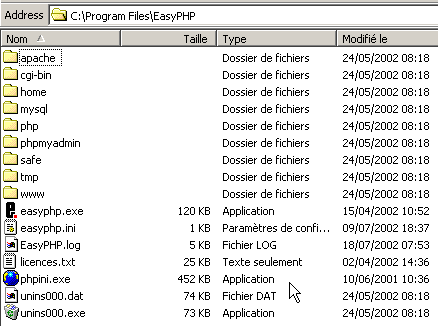
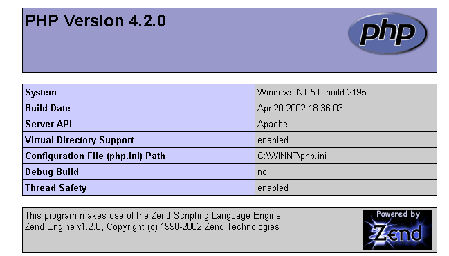
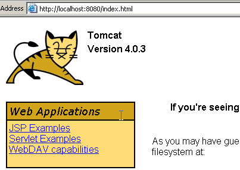
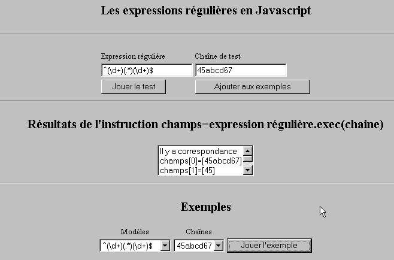

8. Annexes
8.1. Les outils du développement web
Nous indiquons ici où trouver et comment installer les outils nécessaires au développement web. Certains outils ont vu leurs versions évoluer et il se peut que les explications données ici ne conviennent plus pour les versions les plus récentes. Le lecteur sera alors amené à s'adpater... Dans le cours de programmation web, nous utiliserons essentiellement les outils suivants, tous disponibles gratuitement :
- un navigateur récent capable d'afficher du XML. Les exemples du cours ont été testés avec Internet Explorer 6.
- un JDK (Java Development Kit) récent. Les exemples du cours ont été testés avec le JDK 1.4. Ce JDK amène avec lui le Plug-in Java 1.4 pour les navigateurs ce qui permet à ces derniers d'afficher des applets Java utilisant le JDK 1.4.
- un environnement de développement Java pour écrire des servlets Java. Ici c'est JBuilder 7.
- des serveurs web : Apache, PWS (Personal Web Server), Tomcat.
- Apache sera utilisé pour le développement d'applications web en PERL (Practical Extracting and Reporting Language) ou PHP (Personal Home Page)
- PWS sera utilisé pour le développement d'applications web en ASP (Active Server Pages) ou PHP
- Tomcat sera utilisé pour le développement d'applications web à l'aide de servlets Java ou de pages JSP (Java Server pages)
- une application de gestion de base de données : MySQL
- EasyPHP : un outil qui amène ensemble le serveur Web Apache, le langage PHP et le SGBD MySQL
8.1.1. Serveurs Web, Navigateurs, Langages de scripts
- Serveurs Web principaux
- Apache (Linux, Windows)
- Interner Information Server IIS (NT), Personal Web Server PWS (Windows 9x)
- Navigateurs principaux
- Internet Explorer (Windows)
- Netscape (Linux, Windows)
- Langages de scripts côté serveur
- VBScript (IIS, PWS)
- JavaScript (IIS, PWS)
- Perl (Apache, IIS, PWS)
- PHP (Apache, IIS, PWS)
- Java (Apache, Tomcat)
- Langages .NET
- Langages de scripts côté navigateur
- VBScript (IE)
- Javascript (IE, Netscape)
- Perlscript (IE)
- Java (IE, Netscape)
8.1.2. Où trouver les outils
http://www.netscape.com/ (lien downloads) | |
http://www.microsoft.com/windows/ie/default.asp | |
http://www.php.net http://www.php.net/downloads.php (Windows Binaries) | |
http://www.activestate.com http://www.activestate.com/Products/ http://www.activestate.com/Products/ActivePerl/ | |
http://msdn.microsoft.com/scripting (suivre le lien windows script) | |
http://java.sun.com/ http://java.sun.com/downloads.html (JSE) http://java.sun.com/j2se/1.4/download.html | |
http://www.apache.org/ http://www.apache.org/dist/httpd/binaries/win32/ | |
inclus dans NT 4.0 Option pack for Windows 95 inclus dans le CD de Windows 98 http://www.microsoft.com/ntserver/nts/downloads/recommended/NT4OptPk/win95.asp | |
http://www.microsoft.com | |
http://jakarta.apache.org/tomcat/ | |
http://www.borland.com/jbuilder/ http://www.borland.com/products/downloads/download_jbuilder.html | |
http://www.easyphp.org/ http://www.easyphp.org/telechargements.php3 |
8.1.3. EasyPHP
Cette application est très pratique en ce qu'elle amène dans un même paquetage :
- le serveur Web Apache (1.3.x)
- le langage PHP (4.x)
- le SGBD MySQL (3.23.x)
- un outil d'administration de MySQL : PhpMyAdmin
L'application d'installation se présente sous la forme suivante :

L'installation d'EasyPHP ne pose pas de problème et une arborescence est créée dans le système de fichiers :

l'exécutable de l'application | |
l'arborescence du serveur apache | |
l'arborescence du SGBD mysql | |
l'arborescence de l'application phpmyadmin | |
l'arborescence de php | |
racine de l'arborescence des pages web délivrées par le serveur apache d'EasyPHP | |
arborescence où l'on peut palcer des script CGI pour le serveur Apache |
L'intérêt principal d'EasyPHP est que l'application arrive préconfigurée. Ainsi Apache, PHP, MySQL sont déjà configurés pour travailler ensemble. Lorsqu'on lance EasyPhp par son lien dans le menu des programmes, une icône se met en place en bas à droite de l'écran.
 |  |
C'est le E avec un point rouge qui doit clignoter si le serveur web Apache et la base de données MySQL sont opérationnels. Lorsqu'on clique dessus avec le bouton droit de la souris, on accède à des options de menu :

L'option Administration permet de faire des réglages et des tests de bon fonctionnement :

8.1.3.1. Administration PHP
Le bouton infos php doit vous permettre de vérifier le bon fonctionnement du couple Apache-PHP : une page d'informations PHP doit apparaître :

Le bouton extensions donne la liste des extensions installées pour php. Ce sont en fait des bibliothèques de fonctions.

L'écran ci-dessus montre par exemple que les fonctions nécessaires à l'utilisation de la base MySQL sont bien présentes.
Le bouton paramètres donne le login/motdepasse de l'administrateur de la base de données MySQL.

L'utilisation de la base MySQL dépasse le cadre de cette présentation rapide mais il est clai ici qu'il faudrait mettre un mot de passe à l'administrateur de la base.
8.1.3.2. Administration Apache
Toujours dans la page d'administration d'EasyPHP, le lien vos alias permet de définir des alias associés à un répertoire. Cela permet de mettre des pages Web ailleurs que dans le répertoire www de l'arborescence d'easyPhp.

Si dans la page ci-dessus, on met les informations suivantes :

et qu'on utilise le bouton valider les lignes suivantes sont ajoutées au fichier <easyphp>\apache\conf\httpd.conf :
Alias /st/ "e:/data/serge/web/"
<Directory "e:/data/serge/web">
Options FollowSymLinks Indexes
AllowOverride None
Order deny,allow
allow from 127.0.0.1
deny from all
</Directory>
<easyphp> désigne le répertoire d'installation d'EasyPHP. httpd.conf est le fichier de configuration du serveur Apache. On peut donc faire la même chose en éditant directement ce fichier. Une modification du fichier httpd.conf est normalement prise en compte immédiatement par Apache. Si ce n'était pas le cas, il faudrait l'arrêter puis le relancer, toujours avec l'icône d'easyphp :
Pour terminer notre exemple, on peut maintenant placer des pages web dans l'arborescence e:\data\serge\web :
et demander cette page en utilisant l'alias st :

Dans cet exemple, le serveur Apache a été configuré pour travailler sur le port 81. Son port par défaut est 80. Ce point est contrôlé par la ligne suivante du fichier httpd.conf déjà rencontré :
8.1.3.3. Le fichier de configuration d'Apache htpd.conf
Lorsqu'on veut configurer un peu finement Apache, on est obligé d'aller modifier "à la main" son fichier de configuration httpd.conf situé ici dans le dossier <easyphp>\apache\conf :

Voici quelques points à retenir de ce fichier de configuration :
rôle | |
indique le dossier où se trouve l'arborescence de Apache | |
indique sur quel port va travailler le serveur Web. Classiquement c'est 80. En changeant cette ligne, on peut faire travailler le serveur Web sur un autre port | |
l'adresse email de l'administrateur du serveur Apache | |
le nom de la machine sur laquelle "tourne" le serveur Apache | |
le répertoire d'installation du serveur Apache. Lorsque dans le fichier de configuration, apparaissent des noms relatifs de fichiers, ils sont relatifs par rapport à ce dossier. | |
le dossier racine de l'arborescence des pages Web délivrées par le serveur. Ici, l'url http://machine/rep1/fic1.html correspondra au fichier E:\Program Files\EasyPHP\www \rep1\fic1.html | |
fixe les propriétés du dossier précédent | |
dossier des logs, donc en fait <ServerRoot>\logs\error.log : E:\Program Files\EasyPHP\apache\logs\error.log. C'est le fichier à consulter si vous constatez que le serveur Apache ne fonctionne pas. | |
E:\Program Files\EasyPHP\cgi-bin sera la racine de l'arborescence où l'on pourra mettre des scripts CGI. Ainsi l'URL http://machine/cgi-bin/rep1/script1.pl sera l'url du script CGI E:\Program Files\EasyPHP\cgi-bin \rep1\script1.pl. | |
fixe les propriétés du dossier ci-dessus | |
lignes de chargement des modules permettant à Apache de travailler avec PHP4. | |
fixe les suffixes des fichiers à considérer comme des fichiers comme devant être traités par PHP |
8.1.3.4. Administration de MySQL avec PhpMyAdmin
Sur la page d'administration d'EasyPhp, on clique sur le bouton PhpMyAdmin :

La liste déroulante sous Accueil permet de voir les bases de données actuelles. |  |
Le nombre entre parenthèses est le nombre de tables. Si on choisit une base, les tables de celles-ci s'affichent : |  |
La page Web offre un certain nombre d'opérations sur la base :

Si on clique sur le lien Afficher de user :

Il n'y a ici qu'un seul utilisateur : root, qui est l'administrateur de MySQL. En suivant le lien Modifier, on pourrait changer son mot de passe qui est actuellement vide, ce qui n'est pas conseillé pour un administrateur.
Nous n'en dirons pas plus sur PhpMyAdmin qui est un logiciel riche et qui mériterait un développement de plusieurs pages.
8.1.4. PHP
Nous avons vu comment obtenir PHP au travers de l'application EasyPhp. Pour obtenir PHP directement, on ira sur le site http://www.php.net.
PHP n'est pas utilisable que dans le cadre du Web. On peut l'utiliser comme langage de scripts sous Windows. Créez le script suivant et sauvegardez-le sous le nom date.php :
<?
// script php affichant l'heure
$maintenant=date("j/m/y, H:i:s",time());
echo "Nous sommes le $maintenant";
?>
Dans une fenêtre DOS, placez-vous dans le répertoire de date.php et exécutez-le :
E:\data\serge\php\essais>"e:\program files\easyphp\php\php.exe" date.php
X-Powered-By: PHP/4.2.0
Content-type: text/html
Nous sommes le 18/07/02, 09:31:01
8.1.5. PERL
Il est préférable que Internet Explorer soit déjà installé. S'il est présent, Active Perl va le configurer afin qu'il accepte des scripts PERL dans les pages HTML, scripts qui seront exécutés par IE lui-même côté client. Le site de Active Perl est à l'URL http://www.activestate.comA l'installation, PERL sera installé dans un répertoire que nous appelerons <perl>. Il contient l'arborescence suivante :
DEISL1 ISU 32 403 23/06/00 17:16 DeIsL1.isu
BIN <REP> 23/06/00 17:15 bin
LIB <REP> 23/06/00 17:15 lib
HTML <REP> 23/06/00 17:15 html
EG <REP> 23/06/00 17:15 eg
SITE <REP> 23/06/00 17:15 site
HTMLHELP <REP> 28/06/00 18:37 htmlhelp
L'exécutable perl.exe est dans <perl>\bin. Perl est un langage de scripts fonctionnant sous Windows et Unix. Il est de plus utilisé dans la programmation WEB. Écrivons un premier script :
# script PERL affichant l'heure
# modules
use strict;
# programme
my ($secondes,$minutes,$heure)=localtime(time);
print "Il est $heure:$minutes:$secondes\n";
Sauvegardez ce script dans un fichier heure.pl. Ouvrez une fenêtre DOS, placez-vous dans le répertoire du script précédent et exécutez-le :
8.1.6. Vbscript, Javascript, Perlscript
Ces langages sont des langages de script pour windows. Ils peuvent fonctionner dans différents conteneurs tels
- Windows Scripting Host pour une utilisation directe sous Windows notamment pour écrire des scripts d'administration système
- Internet Explorer. Il est alors utilisé au sein de pages HTML auxquelles il amène une certaine interactivité impossible à atteindre avec le seul langage HTML.
- Internet Information Server (IIS) le serveur Web de Microsoft sur NT/2000 et son équivalent Personal Web Server (PWS) sur Win9x. Dans ce cas, vbscript est utilisé pour faire de la programmation côté serveur web, technologie appelée ASP (Active Server Pages) par Microsoft.
On récupère le fichier d'installation à l'URL : http://msdn.microsoft.com/scripting et on suit les liens Windows Script. Sont installés :
- le conteneur Windows Scripting Host, conteneur permettant l'utilisation de divers langages de scripts, tels Vbscript et Javascript mais aussi d'autres tel PerlScript qui est amené avec Active Perl.
- un interpréteur VBscript
- un interpréteur Javascript
Présentons quelques tests rapides. Construisons le programme vbscript suivant :
' une classe
class personne
Dim nom
Dim age
End class
' création d'un objet personne
Set p1=new personne
With p1
.nom="dupont"
.age=18
End With
' affichage propriétés personne p1
With p1
wscript.echo "nom=" & .nom
wscript.echo "age=" & .age
End With
Ce programme utilise des objets. Appelons-le objets.vbs (le suffixe vbs désigne un fichier vbscript). Positionnons-nous sur le répertoire dans lequel il se trouve et exécutons-le :
E:\data\serge\windowsScripting\vbscript\poly\objets>cscript objets.vbs
Microsoft (R) Windows Script Host Version 5.6
Copyright (C) Microsoft Corporation 1996-2001. All rights reserved.
nom=dupont
age=18
Maintenant construisons le programme javascript suivant qui utilise des tableaux :
// tableau dans un variant
// tableau vide
tableau=new Array();
affiche(tableau);
// tableau croît dynamiquement
for(i=0;i<3;i++){
tableau.push(i*10);
}
// affichage tableau
affiche(tableau);
// encore
for(i=3;i<6;i++){
tableau.push(i*10);
}
affiche(tableau);
// tableaux à plusieurs dimensions
WScript.echo("-----------------------------");
tableau2=new Array();
for(i=0;i<3;i++){
tableau2.push(new Array());
for(j=0;j<4;j++){
tableau2[i].push(i*10+j);
}//for j
}// for i
affiche2(tableau2);
// fin
WScript.quit(0);
// ---------------------------------------------------------
function affiche(tableau){
// affichage tableau
for(i=0;i<tableau.length;i++){
WScript.echo("tableau[" + i + "]=" + tableau[i]);
}//for
}//function
// ---------------------------------------------------------
function affiche2(tableau){
// affichage tableau
for(i=0;i<tableau.length;i++){
for(j=0;j<tableau[i].length;j++){
WScript.echo("tableau[" + i + "," + j + "]=" + tableau[i][j]);
}// for j
}//for i
}//function
Ce programme utilise des tableaux. Appelons-le tableaux.js (le suffixe js désigne un fichier javascript). Positionnons-nous sur le répertoire dans lequel il se trouve et exécutons-le :
E:\data\serge\windowsScripting\javascript\poly\tableaux>cscript tableaux.js
Microsoft (R) Windows Script Host Version 5.6
Copyright (C) Microsoft Corporation 1996-2001. Tous droits réservés.
tableau[0]=0
tableau[1]=10
tableau[2]=20
tableau[0]=0
tableau[1]=10
tableau[2]=20
tableau[3]=30
tableau[4]=40
tableau[5]=50
-----------------------------
tableau[0,0]=0
tableau[0,1]=1
tableau[0,2]=2
tableau[0,3]=3
tableau[1,0]=10
tableau[1,1]=11
tableau[1,2]=12
tableau[1,3]=13
tableau[2,0]=20
tableau[2,1]=21
tableau[2,2]=22
tableau[2,3]=23
Un dernier exemple en Perlscript pour terminer. Il faut avoir installé Active Perl pour avoir accès à Perlscript.
<job id="PERL1">
<script language="PerlScript">
# du Perl classique
%dico=("maurice"=>"juliette","philippe"=>"marianne");
@cles= keys %dico;
for ($i=0;$i<=$#cles;$i++){
$cle=$cles[$i];
$valeur=$dico{$cle};
$WScript->echo ("clé=".$cle.", valeur=".$valeur);
}
# du perlscript utilisant les objets Windows Script
$dico=$WScript->CreateObject("Scripting.Dictionary");
$dico->add("maurice","juliette");
$dico->add("philippe","marianne");
$WScript->echo($dico->item("maurice"));
$WScript->echo($dico->item("philippe"));
</script>
</job>
Ce programme montre la création et l'utilisation de deux dictionnaires : l'un à la mode Perl classique, l'autre avec l'objet Scripting Dictionary de Windows Script. Sauvegardons ce code dans le fichier dico.wsf (wsf est le suffixe des fichiers Windows Script). Positionnons-nous dans le dossier de ce programme et exécutons-le :
E:\data\serge\windowsScripting\perlscript\essais>cscript dico.wsf
Microsoft (R) Windows Script Host Version 5.6
Copyright (C) Microsoft Corporation 1996-2001. Tous droits réservés.
clé=philippe, valeur=marianne
clé=maurice, valeur=juliette
juliette
marianne
Perlscript peut utiliser les objets du conteneur dans lequel il s'exécute. Ici c'était des objets du conteneur Windows Script. Dans le contexte de la programmation Web, les scripts VBscript, Javascript, Perlscript peuvent être exécutés soit au sein du navigateur IE, soit au sein d'un serveur PWS ou IIS. Si le script est un peu complexe, il peut être judicieux de le tester hors du contexte Web, au sein du conteneur Windows Script comme il a été vu précédemment. On ne pourra tester ainsi que les fonctions du script qui n'utilisent pas des objets propres au navigateur ou au serveur. Même avec cette restriction, cette possibilité reste intéressante car il est en général assez peu pratique de déboguer des scripts s'exécutant au sein des serveurs web ou des navigateurs.
8.1.7. JAVA
Java est disponible à l'URL : http://www.sun.com et s'installe dans une arborescence qu'on appellera <java> qui contient les éléments suivants :
22/05/2002 05:51 <DIR> .
22/05/2002 05:51 <DIR> ..
22/05/2002 05:51 <DIR> bin
22/05/2002 05:51 <DIR> jre
07/02/2002 12:52 8 277 README.txt
07/02/2002 12:52 13 853 LICENSE
07/02/2002 12:52 4 516 COPYRIGHT
07/02/2002 12:52 15 290 readme.html
22/05/2002 05:51 <DIR> lib
22/05/2002 05:51 <DIR> include
22/05/2002 05:51 <DIR> demo
07/02/2002 12:52 10 377 848 src.zip
11/02/2002 12:55 <DIR> docs
Dans bin, on trouvera javac.exe, le compilateur Java et java.exe la machine virtuelle Java. On pourra faire les tests suivants :
- Écrire le script suivant :
//programme Java affichant l'heure
import java.io.*;
import java.util.*;
public class heure{
public static void main(String arg[]){
// on récupère date & heure
Date maintenant=new Date();
// on affiche
System.out.println("Il est "+maintenant.getHours()+
":"+maintenant.getMinutes()+":"+maintenant.getSeconds());
}//main
}//class
- Sauvegarder ce programme sous le nom heure.java. Ouvrir une fenêtre DOS. Se mettre dans le répertoire du fichier heure.java et le compiler :
D:\data\java\essais>c:\jdk1.3\bin\javac heure.java
Note: heure.java uses or overrides a deprecated API.
Note: Recompile with -deprecation for details.
Dans la commande ci-dessus c:\jdk1.3\bin\javac doit être remplacé par le chemin exact du compilateur javac.exe. Vous devez obtenir dans le même répertoire que heure.java un fichier heure.class qui est le programme qui va maintenant être exécuté par la machine virtuelle java.exe.
- Exécuter le programme :
8.1.8. Serveur Apache
Nous avons vu que l'on pouvait obtenir le serveur Apache avec l'application EasyPhp. Pour l'avoir directement, on ira sur le site d'Apache : http://www.apache.org. L'installation crée une arborescence où on trouve tous les fichiers nécessaires au serveur. Appelons <apache> ce répertoire. Il contient une arborescence analogue à la suivante :
UNINST ISU 118 805 23/06/00 17:09 Uninst.isu
HTDOCS <REP> 23/06/00 17:09 htdocs
APACHE~1 DLL 299 008 25/02/00 21:11 ApacheCore.dll
ANNOUN~1 3 000 23/02/00 16:51 Announcement
ABOUT_~1 13 197 31/03/99 18:42 ABOUT_APACHE
APACHE EXE 20 480 25/02/00 21:04 Apache.exe
KEYS 36 437 20/08/99 11:57 KEYS
LICENSE 2 907 01/01/99 13:04 LICENSE
MAKEFI~1 TMP 27 370 11/01/00 13:47 Makefile.tmpl
README 2 109 01/04/98 6:59 README
README NT 3 223 19/03/99 9:55 README.NT
WARNIN~1 TXT 339 21/09/98 13:09 WARNING-NT.TXT
BIN <REP> 23/06/00 17:09 bin
MODULES <REP> 23/06/00 17:09 modules
ICONS <REP> 23/06/00 17:09 icons
LOGS <REP> 23/06/00 17:09 logs
CONF <REP> 23/06/00 17:09 conf
CGI-BIN <REP> 23/06/00 17:09 cgi-bin
PROXY <REP> 23/06/00 17:09 proxy
INSTALL LOG 3 779 23/06/00 17:09 install.log
dossier des fichiers de configuration d'Apache | |
dossier des fichiers de logs (suivi) d'Apache | |
les exécutables d'Apache |
8.1.8.1. Configuration
Dans le dossier <Apache>\conf, on trouve les fichiers suivants : httpd.conf, srm.conf, access.conf. Dans les dernières versions d'Apache, les trois fichiers ont été réunis dans httpd.conf. Nous avons déjà présenté les points importants de ce fichier de configuration. Dans les exemples qui suivent c'est la version Apache d'EasyPhp qui a servi aux tests et donc son fichier de configuration. Dans celui-ci DocumentRoot qui désigne la racine de l'arborescence des pages Web est e:\program files\easyphp\www.
8.1.8.2. Lien PHP - Apache
Pour tester, créer le fichier intro.php avec la seule ligne suivante :
<? phpinfo() ?>
et le mettre à la racine des pages du serveur Apache(DocumentRoot ci-dessus). Demander l’URL http://localhost/intro.php. On doit voir une liste d’informations php :

Le script PHP suivant affiche l'heure. Nous l'avons déjà rencontré :
<?php
// time : nb de millisecondes depuis 01/01/1970
// "format affichage date-heure
// d: jour sur 2 chiffres
// m: mois sur 2 chiffres
// y : année sur 2 chiffres
// H : heure 0,23
// i : minutes
// s: secondes
print "Nous sommes le " . date("d/m/y H:i:s",time());
?>
Plaçons ce fichier texte à la racine des pages du serveur Apache (DocumentRoot ) et appelons-le date.php. Demandons avec un navigateur l’URL http://localhost/date.php. On obtient la page suivante :

8.1.8.3. Lien PERL-APACHE
Il est fait grâce à une ligne de la forme : ScriptAlias /cgi-bin/ "E:/Program Files/EasyPHP/cgi-bin/" du fichier <apache>\conf\httpd.conf. Sa syntaxe est ScriptAlias /cgi-bin/ "<cgi-bin>" où <cgi-bin> est le dossier où on pourra placer des scripts CGI. CGI (Common Gateway Interface) est une norme de dialogue serveur WEB <--> Applications. Un client demande au serveur Web une page dynamique, c.a.d. une page générée par un programme. Le serveur WEB doit donc demander à un programme de générer la page. CGI définit le dialogue entre le serveur et le programme, notamment le mode de transmission des informations entre ces deux entités.
Si besoin est, modifiez la ligne ScriptAlias /cgi-bin/ "<cgi-bin>" et relancez le serveur Apache. Faites ensuite le test suivant :
- Écrire le script :
#!c:\perl\bin\perl.exe
# script PERL affichant l'heure
# modules
use strict;
# programme
my ($secondes,$minutes,$heure)=localtime(time);
print <<FINHTML
Content-Type: text/html
<html>
<head>
<title>heure</title>
</head>
<body>
<h1>Il est $heure:$minutes:$secondes</h1>
</body>
FINHTML
;
- Mettre ce script dans <cgi-bin>\heure.pl où <cgi-bin> est le dossier pouvant recevoir des scripts CGI (cf httpd.conf). La première ligne #!c:\perl\bin\perl.exe désigne le chemin de l'exécutable perl.exe. Le modifier si besoin est.
- Lancer Apache si ce n'est fait
- Demander avec un navigateur l'URL http://localhost/cgi-bin/heure.pl. On obtient la page suivante :

8.1.9. Le serveur PWS
8.1.9.1. Installation
Le serveur PWS (Personal Web Server) est une version personnelle du serveur IIS (Internet Information server) de Microsoft. Ce dernier est disponible sur les machines NT et 2000. Sur les machines win9x, PWS est normalement disponible avec le paquetage d'installation Internet Explorer. Cependant il n'est pas installé par défaut. Il faut prendre une installation personnalisée d'IE et demander l'installation de PWS. Il est par ailleurs disponibles dans le NT 4.0 Option pack for Windows 95.
8.1.9.2. Premiers tests
La racine des pages Web du serveur PWS est lecteur:\inetpub\wwwroot où lecteur est le disque sur lequel vous avez installé PWS. Nous supposons dans la suite que ce lecteur est D. Ainsi l'url http://machine/rep1/page1.html correspondra au fichier d:\inetpub\wwwroot\rep1\page1.html. Le serveur PWS interprète tout fichier de suffixe .asp (Active Server pages) comme étant un script qu'il doit exécuter pour produire une page HTML.
PWS travaille par défaut sur le port 80. Le serveur web Apache aussi... Il faut donc arrêter Apache pour travailler avec PWS si vous avez les deux serveurs. L'autre solution est de configurer Apache pour qu'il travaille sur un autre port. Ainsi dans le fichier httpd.conf de configuration d'Apache, on remplace la ligne Port 80 par Port 81, Apache travaillera désormais sur le port 81 et pourra être utilisé en même temps que PWS. Si PWS ayant été lancé, on demande l'URL http://localhost, on obtient une page analogue à la suivante :
8.1.9.3. Lien PHP - PWS
- Ci-dessous on trouvera un fichier .reg destiné à modifier la base de registres. Double-cliquer sur ce fichier pour modifier la base. Ici la dll nécessaire se trouve dans d:\php4 avec l'exécutable de php. Modifier si besoin est. Les \ doivent être doublés dans le chemin de la dll.
REGEDIT4
[HKEY_LOCAL_MACHINE\SYSTEM\CurrentControlSet\Services\w3svc\parameters\Script Map]
".php"="d:\\php4\\php4isapi.dll"
- Relancer la machine pour que la modification de la base de registres soit prise en compte.
- Créer un dossier php dans d:\inetpub\wwwroot qui est la racine du serveur PWS. Ceci fait, activez PWS et prendre l’onglet « Avancé ». Sélectionner le bouton « Ajouter » pour créer un dossier virtuel :
- Valider le tout et relancer PWS. Mettre dans d:\inetpub\wwwroot\php le fichier intro.php ayant la seule ligne suivante :
- Demander au serveur PWS l’URL http://localhost/php/intro.php. On doit voir la liste d’informations php déjà présentées avec Apache.
8.1.10. Tomcat : servlets Java et pages JSP (Java Server Pages)
Tomcat est un serveur Web permettant de générer des pages HTML grâce à des servlets (programmes Java exécutés par le serveur web) où des pages JSP (Java Server Pages), pages mélangeant code Java et code HTML. C'est l'équivalent des pages ASP (Active Server Pages) du serveur IIS/PWS de Microsoft où là on mélange code VBScript ou Javascript avec du code HTML.
8.1.10.1. Installation
Tomcat est disponible à l'URL : http://jakarta.apache.org. On récupère un fichier .exe d'installation. Lorsqu'on lance ce programme, il commence par indiquer quel JDK il va utiliser. En effet Tomcat a besoin d'un JDK pour s'installer et ensuite compiler et exécuter les servlets Java. Il faut donc que vous ayez installé un JDK Java avant d'installer Tomcat. Le JD le plus récent est conseillé. L'installation va créer une arborescence <tomcat> :

consiste simplement à décompresser cette archive dans un répertoire. Prenez un répertoire ne contenant dans son chemin que des noms sans espace (pas par exemple "Program Files"), ceci parce qu'il y a un bogue dans le processus d'installation de Tomcat. Prenez par exemple C:\tomcat ou D:\tomcat. Appelons ce répertoire <tomcat>. On y trouvera dedans un dossier appelé jakarta-tomcat et dans celui-ci l'arborescence suivante :
LOGS <REP> 15/11/00 9:04 logs
LICENSE 2 876 18/04/00 15:56 LICENSE
CONF <REP> 15/11/00 8:53 conf
DOC <REP> 15/11/00 8:53 doc
LIB <REP> 15/11/00 8:53 lib
SRC <REP> 15/11/00 8:53 src
WEBAPPS <REP> 15/11/00 8:53 webapps
BIN <REP> 15/11/00 8:53 bin
WORK <REP> 15/11/00 9:04 work
8.1.10.2. Démarrage/Arrêt du serveur Web Tomcat
Tomcat est un serveur Web comme l'est Apache ou PWS. Pour le lancer, on dispose de liens dans le menu des programmes :
pour lancer Tomcat | |
pour l'arrêter |
Lorsqu'on lance Tomcat, une fenêtre Dos s'affiche avec le contenu suivant :

On peut mettre cette fenêtre Dos en icône. Elle restera présente pendant tant que Tomcat sera actif. On peut alors passer aux premiers tests. Le serveur Web Tomcat travaille sur le port 8080. Une fois Tomcat lancé, prenez un navigateur Web et demandez l'URL http://localhost:8080. Vous devez obtenir la page suivante :

Suivez le lien Servlet Examples :

Cliquez sur le lien Execute de RequestParameters puis sur celui de Source. Vous aurez un premier aperçu de ce qu'est une servlet Java. Vous pourrez faire de même avec les liens sur les pages JSP.
Pour arrêter Tomcat, on utilisera le lien Stop Tomcat dans le menu des programmes.
8.1.11. Jbuilder
Jbuilder est un environnement de développement d'applications Java. Pour construire des servlets Java où il n'y a pas d'interfaces graphiques, il n'est pas indispensable d'avoir un tel environnement. Un éditeur de textes et un JDK font l'affaire. Seulement JBuilder apporte avec lui quelques plus par rapport à la technique précédente :
- facilité de débogage : le compilateur signale les lignes erronées d'un programme et il est facile de s'y positionner
- suggestion de code : lorsqu'on utilise un objet Java, JBuilder donne en ligne la liste des propriétés et méthodes de celui-ci. Cela est très pratique lorsqu'on sait que la plupart des objets Java ont de très nombreuses propriétés et méthodes qu'il est difficile de se rappeler.
On trouvera JBuilder sur le site http://www.borland.com/jbuilder. Il faut remplir un formulaire pour obtenir le logiciel. Une clé d'activation est envoyée par mél. Pour installer JBuilder 7, il a par exemple été procédé ainsi :
- trois fichiers zip ont été obtenus : pour l'application, pour la documentation, pour les exemples. Chacun de ces zip fait l'objet d'un lien séparé sur le site de JBuilder.
- on a installé d'abord l'application, puis la documentation et enfin les exemples
- lorsqu'on lance l'application la première fois, une clé d'activation est demandée : c'est celle qui vous a été envoyée par mél. Dans la version 7, cette clé est en fait la totalité d'un fichier texte que l'on peut placer, par exemple, dans le dossier d'installation de JB7. Au moment où la clé est demandée, on désigne alors le fichier en question. Ceci fait, la clé ne sera plus redemandée.
Il y a quelques configurations utiles à faire si on veut utiliser JBuilder pour construire des servlets Java. En effet, la version dite Jbuilder personnel est une version allégée qui ne vient notamment pas avec toutes les classes nécessaires pour faire du développement web en Java. On peut faire en sorte que JBuilder utilise les bibliothèques de classes amenées par Tomcat. On procède ainsi :
- lancer JBuilder

- activer l'option Tools/Configure JDKs

Dans la partie JDK Settings ci-dessus, on a normalement dans le champ Name un JDK 1.3.1. Si vous avez un JDK plus récent, utilisez le bouton Change pour désigner le répertoire d'installation de ce dernier. Ci-dessus, on a désigné le répertoire E:\Program Files\jdk14 où avait installé un JDK 1.4. Désormais, JBuilder utilisera ce JDK pour ses compilations et exécutions. Dans la partie (Class, Siurce, Documentation) on a la liste de toutes les bibliothèques de classes qui seront explorées par JBuilder, ici les classes du JDK 1.4. Les classes de celui-ci ne suffisent pas pour faire du développement web en Java. Pour ajouter d'autres bibliothèques de classes on utilise le bouton Add et on désigne les fichiers .jar supplémentaires que l'on veut utiliser. Les fichiers .jar sont des bibliothèques de classes. Tomcat 4.x amène avec lui toutes les bibliothèques de classes nécessaires au développement web. Elles se trouvent dans <tomcat>\common\lib où <tomcat> est le répertoire d'installation de Tomcat :

Avec le bouton Add, on va ajouter ces bibliothèques, une à une, à la liste des bibliothèques explorées par JBuilder :

A partir de maintenant, on peut compiler des programmes java conformes à la norme J2EE, notamment les servlets Java. Jbuilder ne sert qu'à la compilation, l'exécution étant ultérieurement assurée par Tomcat selon des modalités expliquées dans le cours.
8.2. Code source de programmes
8.2.1. Le client TCP générique
Beaucoup de services créés à l'origine de l'Internet fonctionnent selon le modèle du serveur d'écho étudié précédemment : les échanges client-serveur se font pas échanges de lignes de texte. Nous allons écrire un client tcp générique qui sera lancé de la façon suivante : java cltTCPgenerique serveur port
Ce client TCP se connectera sur le port port du serveur serveur. Ceci fait, il créera deux threads :
- un thread chargé de lire des commandes tapées au clavier et de les envoyer au serveur
- un thread chargé de lire les réponses du serveur et de les afficher à l'écran
Pourquoi deux threads? Chaque service TCP-IP a son protocole particulier et on trouve parfois les situations suivantes :
- le client doit envoyer plusieurs lignes de texte avant d'avoir une réponse
- la réponse d'un serveur peut comporter plusieurs lignes de texte
Aussi la boucle envoi d'une unique ligne au serveur - réception d'une unique ligne envoyée par le serveur ne convient-elle pas toujours. On va donc créer deux boucles dissociées :
- une boucle de lecture des commandes tapées au clavier pour être envoyées au serveur. L'utilisateur signalera la fin des commandes avec le mot clé fin.
- une boucle de réception et d'affichage des réponses du serveur. Celle-ci sera une boucle infinie qui ne sera interrompue que par la fermeture du flux réseau par le serveur ou par l'utilisateur au clavier qui tapera la commande fin.
Pour avoir ces deux boucles dissociées, il nous faut deux threads indépendants. Montrons un exemple d'excécution où notre client tcp générique se connecte à un service SMTP (SendMail Transfer Protocol). Ce service est responsable de l'acheminement du courrier électronique à leurs destinataires. Il fonctionne sur le port 25 et a un protocole de dialogue de type échanges de lignes de texte.
Dos>java clientTCPgenerique istia.univ-angers.fr 25
Commandes :
<-- 220 istia.univ-angers.fr ESMTP Sendmail 8.11.6/8.9.3; Mon, 13 May 2002 08:37:26 +0200
help
<-- 502 5.3.0 Sendmail 8.11.6 -- HELP not implemented
mail from: machin@univ-angers.fr
<-- 250 2.1.0 machin@univ-angers.fr... Sender ok
rcpt to: serge.tahe@istia.univ-angers.fr
<-- 250 2.1.5 serge.tahe@istia.univ-angers.fr... Recipient ok
data
<-- 354 Enter mail, end with "." on a line by itself
Subject: test
ligne1
ligne2
ligne3
.
<-- 250 2.0.0 g4D6bks25951 Message accepted for delivery
quit
<-- 221 2.0.0 istia.univ-angers.fr closing connection
[fin du thread de lecture des réponses du serveur]
fin
[fin du thread d'envoi des commandes au serveur]
Commentons ces échanges client-serveur :
- le service SMTP envoie un message de bienvenue lorsqu'un client se connecte à lui :
- certains services ont une commande help donnant des indications sur les commandes utilisables avec le service. Ici ce n'est pas le cas. Les commandes SMTP utilisées dans l'exemple sont les suivantes :
- mail from: expéditeur, pour indiquer l'adresse électronique de l'expéditeur du message
- rcpt to: destinataire, pour indiquer l'adresse électronique du destinataire du message. S'il y a plusieurs destinataires, on ré-émet autant de fois que nécessaire la commande rcpt to: pour chacun des destinataires.
- data qui signale au serveur SMTP qu'on va envoyer le message. Comme indiqué dans la réponse du serveur, celui-ci est une suite de lignes terminée par une ligne contenant le seul caractère point. Un message peut avoir des entêtes séparés du corps du message par une ligne vide. Dans notre exemple, nous avons mis un sujet avec le mot clé Subject:
- une fois le message envoyé, on peut indiquer au serveur qu'on a terminé avec la commande quit. Le serveur ferme alors la connexion réseau. Le thread de lecture peut détecter cet événement et s'arrêter.
- l'utilisateur tape alors fin au clavier pour arrêter également le thread de lecture des commandes tapées au clavier.
Si on vérifie le courrier reçu, nous avons la chose suivante (Outlook) :

On remarquera que le service SMTP ne peut détecter si un expéditeur est valide ou non. Aussi ne peut-on jamais faire confiance au champ from d'un message. Ici l'expéditeur machin@univ-angers.fr n'existait pas.
Ce client tcp générique peut nous permettre de découvrir le protocole de dialogue de services internet et à partir de là construire des classes spécialisées pour des clients de ces services. Découvrons le protocole de dialogue du service POP (Post Office Protocol) qui permet de retrouver ses méls stockés sur un serveur. Il travaille sur le port 110.
Dos> java clientTCPgenerique istia.univ-angers.fr 110
Commandes :
<-- +OK Qpopper (version 4.0.3) at istia.univ-angers.fr starting.
help
<-- -ERR Unknown command: "help".
user st
<-- +OK Password required for st.
pass monpassword
<-- +OK st has 157 visible messages (0 hidden) in 11755927 octets.
list
<-- +OK 157 visible messages (11755927 octets)
<-- 1 892847
<-- 2 171661
...
<-- 156 2843
<-- 157 2796
<-- .
retr 157
<-- +OK 2796 octets
<-- Received: from lagaffe.univ-angers.fr (lagaffe.univ-angers.fr [193.49.144.1])
<-- by istia.univ-angers.fr (8.11.6/8.9.3) with ESMTP id g4D6wZs26600;
<-- Mon, 13 May 2002 08:58:35 +0200
<-- Received: from jaume ([193.49.146.242])
<-- by lagaffe.univ-angers.fr (8.11.1/8.11.2/GeO20000215) with SMTP id g4D6wSd37691;
<-- Mon, 13 May 2002 08:58:28 +0200 (CEST)
...
<-- ------------------------------------------------------------------------
<-- NOC-RENATER2 Tl. : 0800 77 47 95
<-- Fax : (+33) 01 40 78 64 00 , Email : noc-r2@cssi.renater.fr
<-- ------------------------------------------------------------------------
<--
<-- .
quit
<-- +OK Pop server at istia.univ-angers.fr signing off.
[fin du thread de lecture des réponses du serveur]
fin
[fin du thread d'envoi des commandes au serveur]
Les principales commandes sont les suivantes :
- user login, où on donne son login sur la machine qui détient nos méls
- pass password, où on donne le mot de passe associé au login précédent
- list, pour avoir la liste des messages sous la forme numéro, taille en octets
- retr i, pour lire le message n° i
- quit, pour arrêter le dialogue.
Découvrons maintenant le protocole de dialogue entre un client et un serveur Web qui lui travaille habituellement sur le port 80 :
Dos> java clientTCPgenerique istia.univ-angers.fr 80
Commandes :
GET /index.html HTTP/1.0
<-- HTTP/1.1 200 OK
<-- Date: Mon, 13 May 2002 07:30:58 GMT
<-- Server: Apache/1.3.12 (Unix) (Red Hat/Linux) PHP/3.0.15 mod_perl/1.21
<-- Last-Modified: Wed, 06 Feb 2002 09:00:58 GMT
<-- ETag: "23432-2bf3-3c60f0ca"
<-- Accept-Ranges: bytes
<-- Content-Length: 11251
<-- Connection: close
<-- Content-Type: text/html
<--
<-- <html>
<--
<-- <head>
<-- <meta http-equiv="Content-Type"
<-- content="text/html; charset=iso-8859-1">
<-- <meta name="GENERATOR" content="Microsoft FrontPage Express 2.0">
<-- <title>Bienvenue a l'ISTIA - Universite d'Angers</title>
<-- </head>
....
<-- face="Verdana"> - Dernire mise jour le <b>10 janvier 2002</b></font></p>
<-- </body>
<-- </html>
<--
[fin du thread de lecture des réponses du serveur]
fin
[fin du thread d'envoi des commandes au serveur]
Un client Web envoie ses commandes au serveur selon le schéma suivant :
Ce n'est qu'après avoir reçu la ligne vide que le serveur Web répond. Dans l'exemple nous n'avons utilisé qu'une commande :
qui demande au serveur l'URL /index.html et indique qu'il travaille avec le protocole HTTP version 1.0. La version la plus récente de ce protocole est 1.1. L'exemple montre que le serveur a répondu en renvoyant le contenu du fichier index.html puis qu'il a fermé la connexion puisqu'on voit le thread de lecture des réponses se terminer. Avant d'envoyer le contenu du fichier index.html, le serveur web a envoyé une série d'entêtes terminée par une ligne vide :
<-- HTTP/1.1 200 OK
<-- Date: Mon, 13 May 2002 07:30:58 GMT
<-- Server: Apache/1.3.12 (Unix) (Red Hat/Linux) PHP/3.0.15 mod_perl/1.21
<-- Last-Modified: Wed, 06 Feb 2002 09:00:58 GMT
<-- ETag: "23432-2bf3-3c60f0ca"
<-- Accept-Ranges: bytes
<-- Content-Length: 11251
<-- Connection: close
<-- Content-Type: text/html
<--
<-- <html>
La ligne <html> est la première ligne du fichier /index.html. Ce qui précède s'appelle des entêtes HTTP (HyperText Transfer Protocol). Nous n'allons pas détailler ici ces entêtes mais on se rappellera que notre client générique y donne accès, ce qui peut être utile pour les comprendre. La première ligne par exemple :
indique que le serveur Web contacté comprend le protocole HTTP/1.1 et qu'il a bien trouvé le fichier demandé (200 OK), 200 étant un code de réponse HTTP. Les lignes
disent au client qu'il va recevoir 11251 octets représentant du texte HTML (HyperText Markup Language) et qu'à la fin de l'envoi, la connexion sera fermée.
On a donc là un client tcp très pratique. Il fait sans doute moins que le programme telnet officiel mais il était intéressant de l'écrire nous-mêmes. Le programme du client tcp générique est le suivant :
// paquetages importés
import java.io.*;
import java.net.*;
public class clientTCPgenerique{
// reçoit en paramètre les caractéristiques d'un service sous la forme
// serveur port
// se connecte au service
// crée un thread pour lire des commandes tapées au clavier
// celles-ci seront envoyées au serveur
// crée un thread pour lire les réponses du serveur
// celles-ci seront affichées à l'écran
// le tout se termine avec la commande fin tapée au clavier
// variable d'instance
private static Socket client;
public static void main(String[] args){
// syntaxe
final String syntaxe="pg serveur port";
// nombre d'arguments
if(args.length != 2)
erreur(syntaxe,1);
// on note le nom du serveur
String serveur=args[0];
// le port doit être entier >0
int port=0;
boolean erreurPort=false;
Exception E=null;
try{
port=Integer.parseInt(args[1]);
}catch(Exception e){
E=e;
erreurPort=true;
}
erreurPort=erreurPort || port <=0;
if(erreurPort)
erreur(syntaxe+"\n"+"Port incorrect ("+E+")",2);
client=null;
// il peut y avoir des problèmes
try{
// on se connecte au service
client=new Socket(serveur,port);
}catch(Exception ex){
// erreur
erreur("Impossible de se connecter au service ("+ serveur
+","+port+"), erreur : "+ex.getMessage(),3);
// fin
return;
}//catch
// on crée les threads de lecture/écriture
new ClientSend(client).start();
new ClientReceive(client).start();
// fin thread main
return;
}// main
// affichage des erreurs
public static void erreur(String msg, int exitCode){
// affichage erreur
System.err.println(msg);
// arrêt avec erreur
System.exit(exitCode);
}//erreur
}//classe
class ClientSend extends Thread {
// classe chargée de lire des commandes tapées au clavier
// et de les envoyer à un serveur via un client tcp passé en paramètre
private Socket client; // le client tcp
// constructeur
public ClientSend(Socket client){
// on note le client tcp
this.client=client;
}//constructeur
// méthode Run du thread
public void run(){
// données locales
PrintWriter OUT=null; // flux d'écriture réseau
BufferedReader IN=null; // flux clavier
String commande=null; // commande lue au clavier
// gestion des erreurs
try{
// création du flux d'écriture réseau
OUT=new PrintWriter(client.getOutputStream(),true);
// création du flux d'entrée clavier
IN=new BufferedReader(new InputStreamReader(System.in));
// boucle saisie-envoi des commandes
System.out.println("Commandes : ");
while(true){
// lecture commande tapée au clavier
commande=IN.readLine().trim();
// fini ?
if (commande.toLowerCase().equals("fin")) break;
// envoi commande au serveur
OUT.println(commande);
// commande suivante
}//while
}catch(Exception ex){
// erreur
System.err.println("Envoi : L'erreur suivante s'est produite : " + ex.getMessage());
}//catch
// fin - on ferme les flux
try{
OUT.close();client.close();
}catch(Exception ex){}
// on signale la fin du thread
System.out.println("[Envoi : fin du thread d'envoi des commandes au serveur]");
}//run
}//classe
class ClientReceive extends Thread{
// classe chargée de lire les lignes de texte destinées à un
// client tcp passé en paramètre
private Socket client; // le client tcp
// constructeur
public ClientReceive(Socket client){
// on note le client tcp
this.client=client;
}//constructeur
// méthode Run du thread
public void run(){
// données locales
BufferedReader IN=null; // flux lecture réseau
String réponse=null; // réponse serveur
// gestion des erreurs
try{
// création du flux lecture réseau
IN=new BufferedReader(new InputStreamReader(client.getInputStream()));
// boucle lecture lignes de texte du flux IN
while(true){
// lecture flux réseau
réponse=IN.readLine();
// flux fermé ?
if(réponse==null) break;
// affichage
System.out.println("<-- "+réponse);
}//while
}catch(Exception ex){
// erreur
System.err.println("Réception : L'erreur suivante s'est produite : " + ex.getMessage());
}//catch
// fin - on ferme les flux
try{
IN.close();client.close();
}catch(Exception ex){}
// on signale la fin du thread
System.out.println("[Réception : fin du thread de lecture des réponses du serveur]");
}//run
}//classe
8.2.2. Le serveur Tcp générique
Maintenant nous nous intéressons à un serveur
- qui affiche à l'écran les commandes envoyées par ses clients
- leur envoie comme réponse les lignes de texte tapées au clavier par un utilisateur. C'est donc ce dernier qui fait office de serveur.
Le programme est lancé par : java serveurTCPgenerique portEcoute, où portEcoute est le port sur lequel les clients doivent se connecter. Le service au client sera assuré par deux threads :
- un thread se consacrant exclusivement à la lecture des lignes de texte envoyées par le client
- un thread se consacrant exclusivement à la lecture des réponses tapées au clavier par l'utilisateur. Celui-ci signalera par la commande fin qu'il clôt la connexion avec le client.
Le serveur crée deux threads par client. S'il y a n clients, il y aura 2n threads actifs en même temps. Le serveur lui ne s'arrête jamais sauf par un Ctrl-C tapé au clavier par l'utilisateur. Voyons quelques exemples.
Le serveur est lancé sur le port 100 et on utilise le client générique pour lui parler. La fenêtre du client est la suivante :
E:\data\serge\MSNET\c#\réseau\client tcp générique> java clientTCPgenerique localhost 100
Commandes :
commande 1 du client 1
<-- réponse 1 au client 1
commande 2 du client 1
<-- réponse 2 au client 1
fin
L'erreur suivante s'est produite : Impossible de lire les données de la connexion de transport.
[fin du thread de lecture des réponses du serveur]
[fin du thread d'envoi des commandes au serveur]
Les lignes commençant par <-- sont celles envoyées du serveur au client, les autres celles du client vers le serveur. La fenêtre du serveur est la suivante :
Dos> java serveurTCPgenerique 100
Serveur générique lancé sur le port 100
Thread de lecture des réponses du serveur au client 1 lancé
1 : Thread de lecture des demandes du client 1 lancé
<-- commande 1 du client 1
réponse 1 au client 1
1 : <-- commande 2 du client 1
réponse 2 au client 1
1 : [fin du Thread de lecture des demandes du client 1]
fin
[fin du Thread de lecture des réponses du serveur au client 1]
Les lignes commençant par <-- sont celles envoyées du client au serveur. Les lignes N : sont les lignes envoyées du serveur au client n° N. Le serveur ci-dessus est encore actif alors que le client 1 est terminé. On lance un second client pour le même serveur :
Dos> java clientTCPgenerique localhost 100
Commandes :
commande 3 du client 2
<-- réponse 3 au client 2
fin
L'erreur suivante s'est produite : Impossible de lire les données de la connexion de transport.
[fin du thread de lecture des réponses du serveur]
[fin du thread d'envoi des commandes au serveur]
La fenêtre du serveur est alors celle-ci :
Dos> java serveurTCPgenerique 100
Serveur générique lancé sur le port 100
Thread de lecture des réponses du serveur au client 1 lancé
1 : Thread de lecture des demandes du client 1 lancé
<-- commande 1 du client 1
réponse 1 au client 1
1 : <-- commande 2 du client 1
réponse 2 au client 1
1 : [fin du Thread de lecture des demandes du client 1]
fin
[fin du Thread de lecture des réponses du serveur au client 1]
Thread de lecture des réponses du serveur au client 2 lancé
2 : Thread de lecture des demandes du client 2 lancé
<-- commande 3 du client 2
réponse 3 au client 2
2 : [fin du Thread de lecture des demandes du client 2]
fin
[fin du Thread de lecture des réponses du serveur au client 2]
^C
Simulons maintenant un serveur web en lançant notre serveur générique sur le port 88 :
Dos> java serveurTCPgenerique 88
Serveur générique lancé sur le port 88
Prenons maintenant un navigateur et demandons l'URL http://localhost:88/exemple.html. Le navigateur va alors se connecter sur le port 88 de la machine localhost puis demander la page /exemple.html :

Regardons maintenant la fenêtre de notre serveur :
Dos>java serveurTCPgenerique 88
Serveur générique lancé sur le port 88
Thread de lecture des réponses du serveur au client 2 lancé
2 : Thread de lecture des demandes du client 2 lancé
<-- GET /exemple.html HTTP/1.1
<-- Accept: image/gif, image/x-xbitmap, image/jpeg, image/pjpeg, application/msword, */*
<-- Accept-Language: fr
<-- Accept-Encoding: gzip, deflate
<-- User-Agent: Mozilla/4.0 (compatible; MSIE 6.0; Windows NT 5.0; .NET CLR 1.0.3705; .NET CLR 1.0.2
914)
<-- Host: localhost:88
<-- Connection: Keep-Alive
<--
On découvre ainsi les entêtes HTTP envoyés par le navigateur. Cela nous permet de découvrir peu à peu le protocole HTTP. Lors d'un précédent exemple, nous avions créé un client Web qui n'envoyait que la seule commande GET. Cela avait été suffisant. On voit ici que le navigateur envoie d'autres informations au serveur. Elles ont pour but d'indiquer au serveur quel type de client il a en face de lui. On voit aussi que les entêtes HTTP se terminent par une ligne vide.
Elaborons une réponse à notre client. L'utilisateur au clavier est ici le véritable serveur et il peut élaborer une réponse à la main. Rappelons-nous la réponse faite par un serveur Web dans un précédent exemple :
<-- HTTP/1.1 200 OK
<-- Date: Mon, 13 May 2002 07:30:58 GMT
<-- Server: Apache/1.3.12 (Unix) (Red Hat/Linux) PHP/3.0.15 mod_perl/1.21
<-- Last-Modified: Wed, 06 Feb 2002 09:00:58 GMT
<-- ETag: "23432-2bf3-3c60f0ca"
<-- Accept-Ranges: bytes
<-- Content-Length: 11251
<-- Connection: close
<-- Content-Type: text/html
<--
<-- <html>
Essayons de donner une réponse analogue :
...
<-- Host: localhost:88
<-- Connection: Keep-Alive
<--
2 : HTTP/1.1 200 OK
2 : Server: serveur tcp generique
2 : Connection: close
2 : Content-Type: text/html
2 :
2 : <html>
2 : <head><title>Serveur generique</title></head>
2 : <body>
2 : <center>
2 : <h2>Reponse du serveur generique</h2>
2 : </center>
2 : </body>
2 : </html>
2 : fin
L'erreur suivante s'est produite : Impossible de lire les données de la connexion de transport.
[fin du Thread de lecture des demandes du client 2]
[fin du Thread de lecture des réponses du serveur au client 2]
Les lignes commençant par 2 : sont envoyées du serveur au client n° 2. La commande fin clôt la connexion du serveur au client. Nous nous sommes limités dans notre réponse aux entêtes HTTP suivants :
HTTP/1.1 200 OK
2 : Server: serveur tcp generique
2 : Connection: close
2 : Content-Type: text/html
2 :
Nous ne donnons pas la taille du fichier que nous allons envoyer (Content-Length) mais nous contentons de dire que nous allons fermer la connexion (Connection: close) après envoi de celui-ci. Cela est suffisant pour le navigateur. En voyant la connexion fermée, il saura que la réponse du serveur est terminée et affichera la page HTML qui lui a été envoyée. Cette dernière est la suivante :
2 : <html>
2 : <head><title>Serveur generique</title></head>
2 : <body>
2 : <center>
2 : <h2>Reponse du serveur generique</h2>
2 : </center>
2 : </body>
2 : </html>
L'utilisateur ferme ensuite la connexion au client en tapant la commande fin. Le navigateur sait alors que la réponse du serveur est terminée et peut alors l'afficher :

Si ci-dessus, on fait View/Source pour voir ce qu'a reçu le navigateur, on obtient :

c'est à dire exactement ce qu'on a envoyé depuis le serveur générique.
Le code du serveur tcp générique est le suivant :
// paquetages
import java.io.*;
import java.net.*;
public class serveurTCPgenerique{
// programme principal
public static void main (String[] args){
// reçoit le port d'écoute des demandes des clients
// crée un thread pour lire les demandes du client
// celles-ci seront affichées à l'écran
// crée un thread pour lire des commandes tapées au clavier
// celles-ci seront envoyées comme réponse au client
// le tout se termine avec la commande fin tapée au clavier
final String syntaxe="Syntaxe : pg port";
// variable d'instance
// y-a-t-il un argument
if(args.length != 1)
erreur(syntaxe,1);
// le port doit être entier >0
int port=0;
boolean erreurPort=false;
Exception E=null;
try{
port=Integer.parseInt(args[0]);
}catch(Exception e){
E=e;
erreurPort=true;
}
erreurPort=erreurPort || port <=0;
if(erreurPort)
erreur(syntaxe+"\n"+"Port incorrect ("+E+")",2);
// on crée le servive d'écoute
ServerSocket ecoute=null;
int nbClients=0; // nbre de clients traités
try{
// on crée le service
ecoute=new ServerSocket(port);
// suivi
System.out.println("Serveur générique lancé sur le port " + port);
// boucle de service aux clients
Socket client=null;
while (true){ // boucle infinie - sera arrêtée par Ctrl-C
// attente d'un client
client=ecoute.accept();
// le service est assuré des threads séparés
nbClients++;
// on crée les threads de lecture/écriture
new ServeurSend(client,nbClients).start();
new ServeurReceive(client,nbClients).start();
// on retourne à l'écoute des demandes
}// fin while
}catch(Exception ex){
// on signale l'erreur
erreur("L'erreur suivante s'est produite : " + ex.getMessage(),3);
}//catch
}// fin main
// affichage des erreurs
public static void erreur(String msg, int exitCode){
// affichage erreur
System.err.println(msg);
// arrêt avec erreur
System.exit(exitCode);
}//erreur
}//classe
class ServeurSend extends Thread{
// classe chargée de lire des réponses tapées au clavier
// et de les envoyer à un client via un client tcp passé au constructeur
Socket client; // le client tcp
int numClient; // n° de client
// constructeur
public ServeurSend(Socket client, int numClient){
// on note le client tcp
this.client=client;
// et son n°
this.numClient=numClient;
}//constructeur
// méthode Run du thread
public void run(){
// données locales
PrintWriter OUT=null; // flux d'écriture réseau
String réponse=null; // réponse lue au clavier
BufferedReader IN=null; // flux clavier
// suivi
System.out.println("Thread de lecture des réponses du serveur au client "+ numClient + " lancé");
// gestion des erreurs
try{
// création du flux d'écriture réseau
OUT=new PrintWriter(client.getOutputStream(),true);
// création du flux clavier
IN=new BufferedReader(new InputStreamReader(System.in));
// boucle saisie-envoi des commandes
while(true){
// identification client
System.out.print("--> " + numClient + " : ");
// lecture réponse tapée au clavier
réponse=IN.readLine().trim();
// fini ?
if (réponse.toLowerCase().equals("fin")) break;
// envoi réponse au serveur
OUT.println(réponse);
// réponse suivante
}//while
}catch(Exception ex){
// erreur
System.err.println("L'erreur suivante s'est produite : " + ex.getMessage());
}//catch
// fin - on ferme les flux
try{
OUT.close();client.close();
}catch(Exception ex){}
// on signale la fin du thread
System.out.println("[fin du Thread de lecture des réponses du serveur au client "+ numClient+ "]");
}//run
}//classe
class ServeurReceive extends Thread{
// classe chargée de lire les lignes de texte envoyées au serveur
// via un client tcp passé au constructeur
Socket client; // le client tcp
int numClient; // n° de client
// constructeur
public ServeurReceive(Socket client, int numClient){
// on note le client tcp
this.client=client;
// et son n°
this.numClient=numClient;
}//constructeur
// méthode Run du thread
public void run(){
// données locales
BufferedReader IN=null; // flux lecture réseau
String réponse=null; // réponse serveur
// suivi
System.out.println("Thread de lecture des demandes du client "+ numClient + " lancé");
// gestion des erreurs
try{
// création du flux lecture réseau
IN=new BufferedReader(new InputStreamReader(client.getInputStream()));
// boucle lecture lignes de texte du flux IN
while(true){
// lecture flux réseau
réponse=IN.readLine();
// flux fermé ?
if(réponse==null) break;
// affichage
System.out.println("<-- "+réponse);
}//while
}catch(Exception ex){
// erreur
System.err.println("L'erreur suivante s'est produite : " + ex.getMessage());
}//catch
// fin - on ferme les flux
try{
IN.close();client.close();
}catch(Exception ex){}
// on signale la fin du thread
System.out.println("[fin du Thread de lecture des demandes du client "+ numClient+"]");
}//run
}//classe
8.3. JAVASCRIPT
Nous montrons dans cette partie trois exemples d'utilisation de Javascript dans les pages WEB. Nous nous centrons sur la gestion des formulaires mais Javascript peut faire bien davantage.
8.3.1. Récupérer les informations d'un formulaire
L'exemple ci-dessous montre comment récupérer au sein du navigateur les données entrées par l'utilisateur au sein d'un formulaire. Cela permet en général de faire des pré-traitements avant de les envoyer au serveur.
8.3.1.1. Le formulaire
On a un formulaire rassemblant les composants les plus courants et d'un bouton Afficher permettant d'afficher les saisies faites par l'utilisateur.

8.3.1.2. Le code
<html>
<head>
<title>Un formulaire traité par Javascript</title>
<script language="javascript">
function afficher(){
// affiche dans une liste les infos du formulaire
// on efface d'abord
effacerInfos();
// on affiche la valeur des # champs
with(document.frmExemple){
// champ caché
ecrire("champ caché="+cache.value);
// champ textuel simple
ecrire("champ textuel simple="+simple.value);
// champ textuel multiple
ecrire("champ textuel multiple="+lignes.value);
// boutons radio
for(i=0;i<radio.length;i++){
texte="radio["+i+"]="+radio[i].value;
if(radio[i].checked) texte+=", coché";
ecrire(texte);
}//for
// cases à cocher
for(i=0;i<qcm.length;i++){
texte="qcm["+i+"]="+qcm[i].value;
if(qcm[i].checked) texte+=", coché";
ecrire(texte);
}//for
//liste déroulante
ecrire("index sélectionné dans le menu="+menu.selectedIndex);
for(i=0;i<menu.length;i++){
texte="menu["+i+"]="+menu.options[i].text;
if(menu.options[i].selected) texte+=",sélectionné";
ecrire(texte);
}//for
//liste à choix multiple
for(i=0;i<lstVoitures.length;i++){
texte="lstVoitures["+i+"]="+lstVoitures.options[i].text;
if(lstVoitures.options[i].selected) texte+=",sélectionné";
ecrire(texte);
}//for
//mot de passe
ecrire("mot de passe="+passwd.value);
}//with
}//function
function ecrire(texte){
// écrit texte dans la liste des infos
frmInfos.lstInfos.options[frmInfos.lstInfos.length]=new Option(texte);
}//écrire
function effacerInfos(){
frmInfos.lstInfos.length=0;
}//effacerInfos
</script>
</head>
<body bgcolor="#C0C0C0" onload="afficher()">
<center>
<h2>Un formulaire traité par Javascript</h2>
<hr>
<form method="POST" name="frmExemple">
<input type="hidden" name="cache" value="secret">
<table border="0">
<tr>
<td align="center">Un champ textuel simple</td>
<td align="center" width="100"> </td>
<td align="center">Un champ textuel sur plusieurs lignes</td>
</tr>
<tr>
<td align="center"><input type="text" size="20" name="simple"></td>
<td align="center" width="100"> </td>
<td align="center">
<textarea name="lignes" rows="2" cols="40">Ce texte est modifiable</textarea>
</td>
</tr>
</table>
<table border="0">
<tr>
<td><strong>Des boutons radio :</strong></td>
<td>
<input type="radio" checked name="radio" value="FM">FM
</td>
<td>
<input type="radio" name="radio" value="GO">GO
</td>
<td>
<input type="radio" name="radio" value="PO">PO
</td>
<td> </td>
<td><strong>Des choix multiples :</strong></td>
<td>
<input type="checkbox" name="qcm" value="un">un
</td>
<td>
<input type="checkbox" name="qcm" value="deux">deux
</td>
<td>
<input type="checkbox" name="qcm" value="trois">trois
</td>
</tr>
</table>
<table border="0">
<tr>
<td>Un menu déroulant : </td>
<td>
<select name="menu" size="1">
<option>50 F</option>
<option>60 F</option>
<option>70 F</option>
<option>100 F</option>
</select>
</td>
<td>Une liste :</td>
<td>
<select name="lstVoitures" multiple size="3">
<option>Renault</option>
<option>Citroën</option>
<option>Peugeot</option>
<option>Fiat</option>
<option>Audi</option>
</select>
</td>
</tr>
</table>
<table border="0">
<tr>
<td>Un mot de passe : </td>
<td><input type="password" size="21" name="passwd"></td>
<td> </td>
<td>Un champ de contexte caché : </td>
</tr>
</table>
</form>
<hr>
<h2>Informations du formulaire</h2>
<form name="frmInfos">
<table>
<tr>
<td><input type="button" value="Effacer" onclick="effacerInfos()"></td>
<td>
<select name="lstInfos" multiple size="3">
</select>
</td>
<td>
<input type="button" name="cmdAfficher" value="Afficher" onclick="afficher()">
</td>
</tr>
</form>
</body>
</html>
8.3.2. Les expressions régulières en Javascript
Côté navigateur, Javascript peut être utilisé pour vérifier la validité des données entrées par l'utilisateur avant de les envoyer au serveur. Voici un programme de test de ces expressions régulières.
8.3.2.1. La page de test

8.3.2.2. Le code de la page
<html>
<head>
<title>Les expressions régulières en Javascript</title>
<script language="javascript">
function afficherInfos(){
with(document.frmRegExp){
// qq chose à faire ?
if (! verifier()) return;
// c'est bon - on efface les résultats précédents
effacerInfos();
// vérification du modèle
modele=new RegExp(txtModele.value);
champs=modele.exec(txtChaine.value);
if(champs==null)
// pas de correspondance entre modèle et chaîne
ecrireInfos("pas de correspondance");
else{
// correspondance - on affiche les résultats obtenus
ecrireInfos("Il y a correspondance");
for(i=0;i<champs.length;i++)
ecrireInfos("champs["+i+"]=["+champs[i]+"]");
}//else
}//with
}//function
function ecrireInfos(texte){
// écrit texte dans la liste des infos
document.frmRegExp.lstInfos.options[document.frmRegExp.lstInfos.length]=new Option(texte);
}//écrire
function effacerInfos(){
frmRegExp.lstInfos.length=0;
}//effacerInfos
function jouer(){
// teste le modèle contre la chaîne dans l'exemple choisi
with(document.frmRegExp){
txtModele.value=lstModeles.options[lstModeles.selectedIndex].text
txtChaine.value=lstChaines.options[lstChaines.selectedIndex].text
afficherInfos();
}//with
}//jouer
function ajouter(){
//ajoute le test courant aux exemples
with(document.frmRegExp){
// qq chose à faire ?
if (! verifier()) return;
// ajout
lstModeles.options[lstModeles.length]=new Option(txtModele.value);
lstChaines.options[lstChaines.length]=new Option(txtChaine.value);
// raz saisies
txtModele.value="";
txtChaine.value="";
}//with
}//ajouter
function verifier(){
// vérifie que les champs de saisie sont non vides
with(document.frmRegExp){
champs=/^\s*$/.exec(txtModele.value);
if(champs!=null){
alert("Vous n'avez pas indiqué de modèle");
txtModele.focus();
return false;
}//if
champs=/^\s*$/.exec(txtChaine.value);
if(champs!=null){
alert("Vous n'avez pas indiqué de chaîne de test");
txtChaine.focus();
return false;
}//if
// c'est bon
return true;
}//with
}//verifier
</script>
</head>
<body bgcolor="#C0C0C0">
<center>
<h2>Les expressions régulières en Javascript</h2>
<hr>
<form name="frmRegExp">
<table>
<tr>
<td>Expression régulière</td>
<td>Chaîne de test</td>
</tr>
<tr>
<td><input type="text" name="txtModele" size="20"></td>
<td><input type="text" name="txtChaine" size="20"></td>
</tr>
<tr>
<td>
<input type="button" name="cmdAfficher" value="Jouer le test" onclick="afficherInfos()">
</td>
<td>
<input type="button" name="cmdAjouter" value="Ajouter aux exemples" onclick="ajouter()">
</td>
</tr>
</table>
<hr>
<h2>Résultats de l'instruction champs=expression régulière.exec(chaine)</h2>
<table>
<tr>
<td>
<select name="lstInfos" size="3">
</select>
</td>
</tr>
</table>
<hr>
<h2>Exemples</h2>
<table>
<tr>
<td align="center">Modèles</td>
<td align="center">Chaînes</td>
</tr>
<tr>
<td>
<select name="lstModeles" size="1">
<option>^\d+$</option>
<option>^(\d+) (\d+)$</option>
<option>^(\d+)(.*)(\d+)$</option>
<option>^(\d+)(\s+)(\d+)$</option>
</select>
</td>
<td>
<select name="lstChaines" size="1">
<option>67</option>
<option>56 84</option>
<option>45abcd67</option>
<option>45 67</option>
</select>
</td>
<td>
<input type="button" name="cmdJouer" value="Jouer l'exemple" onclick="jouer()">
</td>
</tr>
</form>
</body>
</html>
8.3.3. Gestion des listes en JavaScript
8.3.3.1. Le formulaire

8.3.3.2. Le code
<html>
<head>
<title>Les listes en Javascript</title>
<script language="javascript">
// ajouter
function ajouter(L1,L2,T){
// ajoute la valeur du champ T aux listes L1,L2
// qq chose à faire ?
champs=/^\s*$/.exec(T.value);
if(champs!=null){
// le champ est vide
alert("Vous n'avez pas indiqué la valeur à ajouter");
txtElement.focus();
return;
}//if
// on ajoute l'élément
L1.options[L1.length]=new Option(T.value);
L2.options[L2.length]=new Option(T.value);
T.value="";
}//ajouter
//vider
function vider(L){
// vide la liste L
L.length=0;
}//vider
//transfert
function transfert(L1,L2,simple){
//transfére dans L2 les éléments sélectionnés dans la liste L1
// qq chose à faire ?
// index de l'élément sélectionné dans L1
index1=L1.selectedIndex;
if(index1==-1){
alert("Vous n'avez pas sélectionné d'élément");
return;
}//if
// quel est le mode de sélection des éléments des listes
if(simple){ // sélection simple
element1=L1.options[index1].text;
//ajout dans L2
L2.options[L2.length]=new Option(element1);
//suppression dans L1
L1.options[index1]=null;
}//simple
if(! simple){ //sélection multiple
//on parcourt la liste 1 en sens inverse
for(i=L1.length-1;i>=0;i--){
//élément sélectionné ?
if(L1.options[i].selected){
//on l'ajoute à L2
L2.options[L2.length]=new Option(L1.options[i].text);
//on le supprime de L1
L1.options[i]=null;
}//if
}//for i
}//if ! simple
}//transfert
</script>
</head>
<body bgcolor="#C0C0C0">
<center>
<h2>Les listes en Javascript</h2>
<hr>
<form name="frmListes">
<table>
<tr>
<td>
<input type="button" name="cmdAjouter" value="Ajouter" onclick="ajouter(lst1A,lst1B,txtElement)">
</td>
<td>
<input type="text" name="txtElement">
</td>
</tr>
</table>
<table>
<tr>
<td align="center">liste 1</td>
<td align="center"><input type="button" value=">>" onclick="transfert(lst1A,lst2A,true)"</td>
<td align="center"><input type="button" value="<<" onclick="transfert(lst2A,lst1A,true)"</td>
<td align="center">liste 2</td>
<td width="30"></td>
<td align="center">liste 1</td>
<td align="center"><input type="button" value=">>" onclick="transfert(lst1B,lst2B,false)"</td>
<td align="center"><input type="button" value="<<" onclick="transfert(lst2B,lst1B,false)"</td>
<td align="center">liste 2</td>
</tr>
<tr>
<td></td>
<td align="center">
<select name="lst1A" size="5">
</select>
</td>
<td align="center">
<select name="lst2A" size="5">
</select>
</td>
<td></td>
<td></td>
<td></td>
<td align="center">
<select name="lst1B" size="5" multiple >
</select>
</td>
<td align="center">
<select name="lst2B" size="5" multiple>
</select>
</td>
</tr>
<tr>
<td></td>
<td align="center"><input type="button" value="Vider" onclick="vider(lst1A)"</td>
<td align="center"><input type="button" value="Vider" onclick="vider(lst2A)"</td>
<td></td>
<td></td>
<td></td>
<td align="center"><input type="button" value="Vider" onclick="vider(lst1B)"</td>
<td align="center"><input type="button" value="Vider" onclick="vider(lst2B)"</td>
<td></td>
</tr>
<tr>
<td></td>
<td colspan="2"><strong>Sélection simple</strong></td>
<td></td>
<td></td>
<td></td>
<td colspan="2"><strong>Sélection multiple</strong></td>
<td></td>
</tr>
</table>
<hr>
</form>
</body>
</html>